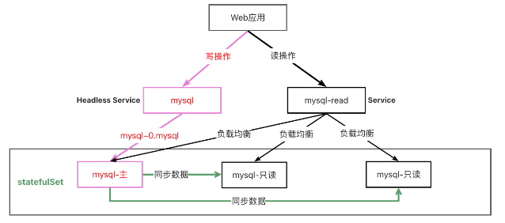
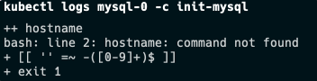
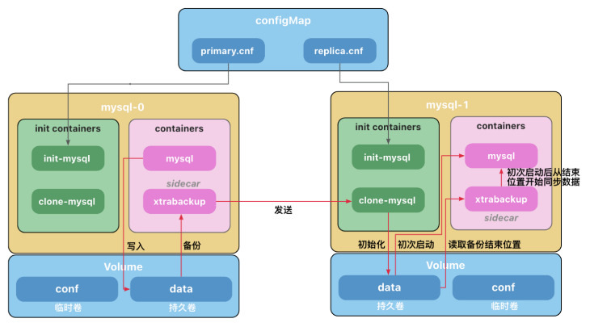

Mysql 主从复制
注意
1.本例子配置比较复杂，仅用于讲解原理，无需掌握配置细节。
2.后面我们会讲使用helm自动化部署，用起来非常简单。
3.本例子不能用于生产，mysql的密码允许设置为空。
下面是部署一个读写分离 Mysql 数据库的示意图。 通过部署无头服务(Headless Service)将写操作指向固定的数据库。 部署一个 Service 用来做读操作的负载均衡。 数据库之间通过同步程序保持数据一致。

Mysql 主从复制
注意：
1.官方的安装文档有错误，mysql镜像需要使用mysql:5.7-debian。否则会出现如下错误：

详见： https://github.com/kubernetes/website/pull/35857
2.谷歌的镜像gcr.io/google-samples/xtrabackup:1.0访问不到，使用ist0ne/xtrabackup:1.0代替
apiVersion: v1
kind: ConfigMap
metadata:
name: mysql
labels:
app: mysql
app.kubernetes.io/name: mysql
data:
primary.cnf: |
# 仅在主服务器上应用此配置
[mysqld]
log-bin
replica.cnf: |
# 仅在副本服务器上应用此配置
[mysqld]
super-read-only
---
# 为 StatefulSet 成员提供稳定的 DNS 表项的无头服务（Headless Service）
apiVersion: v1
kind: Service
metadata:
name: mysql
labels:
app: mysql
app.kubernetes.io/name: mysql
spec:
ports:
- name: mysql
port: 3306
clusterIP: None
selector:
app: mysql
---
# 用于连接到任一 MySQL 实例执行读操作的客户端服务
# 对于写操作，你必须连接到主服务器：mysql-0.mysql
apiVersion: v1
kind: Service
metadata:
name: mysql-read
labels:
app: mysql
app.kubernetes.io/name: mysql
readonly: "true"
spec:
ports:
- name: mysql
port: 3306
selector:
app: mysql
---
apiVersion: apps/v1
kind: StatefulSet
metadata:
name: mysql
spec:
selector:
matchLabels:
app: mysql
app.kubernetes.io/name: mysql
serviceName: mysql
replicas: 3
template:
metadata:
labels:
app: mysql
app.kubernetes.io/name: mysql
spec:
initContainers:
- name: init-mysql
image: mysql:5.7-debian
command:
- bash
- "-c"
- |
set -ex
# 基于 Pod 序号生成 MySQL 服务器的 ID。
[[ $HOSTNAME =~ -([0-9]+)$ ]] || exit 1
ordinal=${BASH_REMATCH[1]}
echo [mysqld] > /mnt/conf.d/server-id.cnf
# 添加偏移量以避免使用 server-id=0 这一保留值。
echo server-id=$((100 + $ordinal)) >> /mnt/conf.d/server-id.cnf
# 将合适的 conf.d 文件从 config-map 复制到 emptyDir。
if [[ $ordinal -eq 0 ]]; then
cp /mnt/config-map/primary.cnf /mnt/conf.d/
else
cp /mnt/config-map/replica.cnf /mnt/conf.d/
fi
volumeMounts:
- name: conf
mountPath: /mnt/conf.d
- name: config-map
mountPath: /mnt/config-map
- name: clone-mysql
image: ist0ne/xtrabackup:1.0
command:
- bash
- "-c"
- |
set -ex
# 如果已有数据，则跳过克隆。
[[ -d /var/lib/mysql/mysql ]] && exit 0
# 跳过主实例（序号索引 0）的克隆。
[[ `hostname` =~ -([0-9]+)$ ]] || exit 1
ordinal=${BASH_REMATCH[1]}
[[ $ordinal -eq 0 ]] && exit 0
# 从原来的对等节点克隆数据。
ncat --recv-only mysql-$(($ordinal-1)).mysql 3307 | xbstream -x -C /var/lib/mysql
# 准备备份。
xtrabackup --prepare --target-dir=/var/lib/mysql
volumeMounts:
- name: data
mountPath: /var/lib/mysql
subPath: mysql
- name: conf
mountPath: /etc/mysql/conf.d
containers:
- name: mysql
image: mysql:5.7-debian
env:
- name: MYSQL_ALLOW_EMPTY_PASSWORD
value: "1"
ports:
- name: mysql
containerPort: 3306
volumeMounts:
- name: data
mountPath: /var/lib/mysql
subPath: mysql
- name: conf
mountPath: /etc/mysql/conf.d
resources:
requests:
cpu: 500m
memory: 1Gi
livenessProbe:
exec:
command: ["mysqladmin", "ping"]
initialDelaySeconds: 30
periodSeconds: 10
timeoutSeconds: 5
readinessProbe:
exec:
# 检查我们是否可以通过 TCP 执行查询（skip-networking 是关闭的）。
command: ["mysql", "-h", "127.0.0.1", "-e", "SELECT 1"]
initialDelaySeconds: 5
periodSeconds: 2
timeoutSeconds: 1
- name: xtrabackup
image: ist0ne/xtrabackup:1.0
ports:
- name: xtrabackup
containerPort: 3307
command:
- bash
- "-c"
- |
set -ex
cd /var/lib/mysql
# 确定克隆数据的 binlog 位置（如果有的话）。
if [[ -f xtrabackup_slave_info && "x$(<xtrabackup_slave_info)" != "x" ]]; then
# XtraBackup 已经生成了部分的 “CHANGE MASTER TO” 查询
# 因为我们从一个现有副本进行克隆。(需要删除末尾的分号!)
cat xtrabackup_slave_info | sed -E 's/;$//g' > change_master_to.sql.in
# 在这里要忽略 xtrabackup_binlog_info （它是没用的）。
rm -f xtrabackup_slave_info xtrabackup_binlog_info
elif [[ -f xtrabackup_binlog_info ]]; then
# 我们直接从主实例进行克隆。解析 binlog 位置。
[[ `cat xtrabackup_binlog_info` =~ ^(.*?)[[:space:]]+(.*?)$ ]] || exit 1
rm -f xtrabackup_binlog_info xtrabackup_slave_info
echo "CHANGE MASTER TO MASTER_LOG_FILE='${BASH_REMATCH[1]}',\
MASTER_LOG_POS=${BASH_REMATCH[2]}" > change_master_to.sql.in
fi
# 检查我们是否需要通过启动复制来完成克隆。
if [[ -f change_master_to.sql.in ]]; then
echo "Waiting for mysqld to be ready (accepting connections)"
until mysql -h 127.0.0.1 -e "SELECT 1"; do sleep 1; done
echo "Initializing replication from clone position"
mysql -h 127.0.0.1 \
-e "$(<change_master_to.sql.in), \
MASTER_HOST='mysql-0.mysql', \
MASTER_USER='root', \
MASTER_PASSWORD='', \
MASTER_CONNECT_RETRY=10; \
START SLAVE;" || exit 1
# 如果容器重新启动，最多尝试一次。
mv change_master_to.sql.in change_master_to.sql.orig
fi
# 当对等点请求时，启动服务器发送备份。
exec ncat --listen --keep-open --send-only --max-conns=1 3307 -c \
"xtrabackup --backup --slave-info --stream=xbstream --host=127.0.0.1 --user=root"
volumeMounts:
- name: data
mountPath: /var/lib/mysql
subPath: mysql
- name: conf
mountPath: /etc/mysql/conf.d
resources:
requests:
cpu: 100m
memory: 100Mi
volumes:
- name: conf
emptyDir: {}
- name: config-map
configMap:
name: mysql
volumeClaimTemplates:
- metadata:
name: data
spec:
accessModes: ["ReadWriteOnce"]
resources:
requests:
storage: 1Gi
操作主库和从库
$ kubectl run mysql-client --image=arey/mysql-client -ti --rm -- mysql -h mysql-0.mysql
If you don't see a command prompt, try pressing enter.
MySQL [mysql]> CREATE DATABASE test;
Query OK, 1 row affected (0.011 sec)
MySQL [mysql]> CREATE TABLE test.messages (message VARCHAR(250));
Query OK, 0 rows affected (0.031 sec)
MySQL [mysql]> INSERT INTO test.messages VALUES ('hello');
Query OK, 1 row affected (0.024 sec)
MySQL [mysql]> SELECT * FROM test.messages;
+---------+
| message |
+---------+
| hello |
+---------+
1 row in set (0.001 sec)
MySQL [mysql]> exit
Bye
Session ended, resume using 'kubectl attach mysql-client -c mysql-client -i -t' command when the pod is running
pod "mysql-client" deleted
# 登录从库，随机选择
$ kubectl run mysql-client --image=arey/mysql-client -ti --rm -- mysql -h mysql-read
If you don't see a command prompt, try pressing enter.
MySQL [mysql]> SELECT * FROM test.messages;
+---------+
| message |
+---------+
| hello |
+---------+
1 row in set (0.002 sec)
# 可见从库是只读的，不能写入
MySQL [mysql]> INSERT INTO test.messages VALUES ('k8s');
ERROR 1290 (HY000): The MySQL server is running with the --super-read-only option so it cannot execute this statement

初始化容器(Init Containers)
初始化容器(Init Containers)是一种特殊容器，它在 Pod 内的应用容器启动之前运行。
初始化容器未执行完毕或以错误状态退出，Pod 内的应用容器不会启动。
初始化容器需要在 initContainers 中定义，与 containers 同级。
基于上面的特性，初始化容器通常用于
- 生成配置文件
- 执行初始化命令或脚本
- 执行健康检查（检查依赖的服务是否处于 Ready 或健康 Health 的状态）
在本例子中，有两个初始化容器。
init-mysql为 MySQL 实例分配server-id,并将mysql-0的配置文件设置为primary.cnf,其他副本设置为replica.cnfclone-mysql从前一个 Pod 中获取备份的数据文件放到自己的数据目录下
边车 Sidecar
Pod 中运行了 2 个容器，MySQL 容器和一个充当辅助工具的 xtrabackup 容器，我们称之为边车(sidecar)。 Xtrabackup 是一个开源的 MySQL 备份工具，支持在线热备份（备份时不影响数据读写），是目前各个云厂商普遍使用的 MySQL 备份工具。
sidecar 容器负责将备份的数据文件发送给下一个 Pod，并在副本服务器，使用数据文件完成数据的导入。
MySQL 使用 bin-log 同步数据，但是，当数据库运行一段时间后，产生了一些数据，这时候如果我们进行扩容，创建了一个新的副本，有可能追溯不到 bin-log 的源头(可能被手动清理或者过期自动删除)，因此需要将现有的数据导入到副本之后，再开启数据同步，sidecar ，后续的数据 MySQL 会自动同步。
客户端连接
写操作
写操作连接 mysql-0.mysql, 参考 操作主库和从库
读操作
读操作连接到mysql-read，它是一个service，会自动将请求负载均衡到后端的三个 mysql 实例上, 操作主库和从库
- 清空
$ kubectl delete -f mysql-cluster.yaml
参考文档： https://kubernetes.io/zh-cn/docs/concepts/workloads/pods/init-containers/ https://kubernetes.io/zh-cn/docs/tasks/run-application/run-replicated-stateful-application/ 深入理解 StatefulSet:有状态应用实践